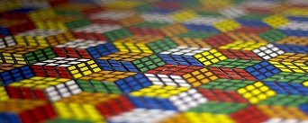

Questo sito verra`presto aggiornato alla versione 2.0
Il cubo di Rubik o cubo magico (Rubik-kocka in ungherese) è un celebre twisty puzzle 3D inventato dal professore di architettura e scultore ungherese Ernő Rubik nel 1974. Chiamato originariamente Magic Cube (Cubo magico) dal suo inventore,il rompicapo fu rinominato in Rubik's Cube (Cubo di Rubik) dalla Ideal nel 1980, che lo vendette grazie all'uomo d'affari Tibor Laczi e al fondatore di Seven TownsTom Kremer, e nello stesso anno vinse un premio speciale dalla giuria dello Spiel des Jahres in Germania, unico solitario premiato nella storia del premio. Al periodo di gennaio 2009, erano stati venduti nel mondo complessivamente 350 milioni di cubi, rendendo il cubo di Rubik il puzzle più venduto al mondo. È da molti ritenuto essere il giocattolo più venduto al mondo.  Su un classico cubo di Rubik, ognuna delle sei facce è ricoperta da nove adesivi, ognuno dei quali presenta un particolare colore: bianco, giallo, rosso, verde, blu e arancione. Nei modelli attualmente sul mercato, generalmente il bianco è opposto al giallo, il rosso all'arancione, e il verde al blu; il bianco, il blu e il rosso sono ordinati in senso orario attorno al corrispettivo angolo del cubo. Nei primi cubi messi in commercio, la posizione dei colori variava da un cubo all'altro. Un meccanismo interno permette alle facce di ruotare in modo indipendente, così da mescolare i colori del cubo. Per risolvere il rompicapo, ogni faccia deve tornare a mostrare un solo colore. Rompicapi simili sono stati sviluppati nel tempo, con differenti dimensioni, colori, facce e adesivi, non tutti realizzati da Rubik.
Lo scopo del gioco è di risalire alla posizione originale dei cubetti portando il cubo ad avere per ogni faccia un colore uguale. L'originale cubo di Rubik (3x3x3) è composto da otto angoli e dodici spigoli. Esistono quindi 8! (40.320) modi diversi di disporre i diversi pezzi angolari nel cubo. Ogni angolo può essere ruotato in tre posizioni diverse, ma solo sette degli otto angoli possono essere ruotati in modo indipendente; la disposizione dell'ultimo angolo dipenderà dalla posizione degli altri sette. Questo fornisce 37 (2.187) diverse possibilità. Ci sono 12!/2 (239.500.800) modi di disporre i dodici spigoli, ciascuno dei quali può essere ruotato in modo indipendente ad eccezione dell'ultimo, la cui posizione dipende da quella degli altri undici, per un totale di 211 (2.048) modi diversi. Il numero totale di permutazioni del cubo di Rubik, ovvero il numero totale di configurazioni che il cubo può assumere: 43.252.003.274.489.856.000